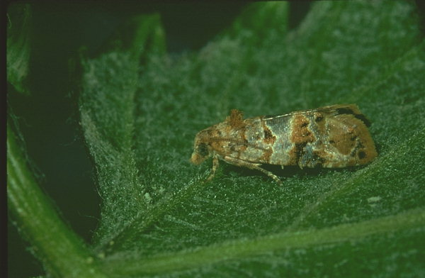
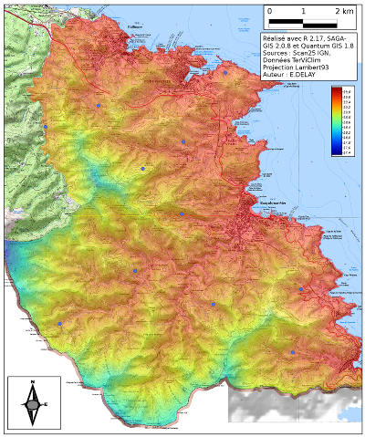
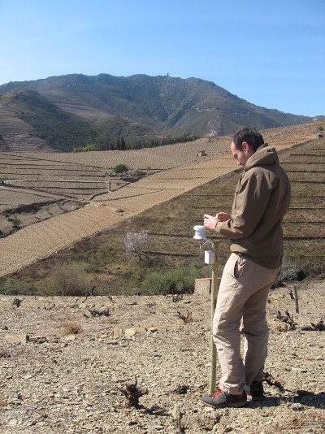
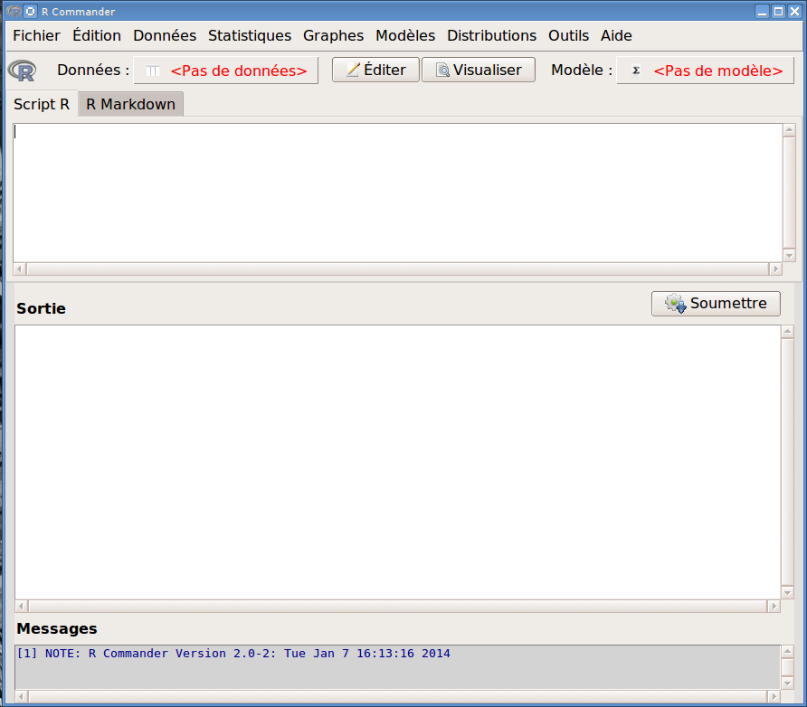

Hello world !
Séance 1 - TD : statistiques appliquées
par Etienne Delay / etienne.delay@unilim.fr Photo: CC by-nc-nd Marie A.-C.Présentation
En quelques mots
- La vie n'est pas un long fleuve tranquille (parcours personnel)
- Doctorant en géographie au laboratoire GEOLAB
- Sujet : les dynamiques paysagères des territoires viticoles de montagne

2 terrains d'étude
- Banyuls-sur-Mer (France)
- Le Val di Cembra (Italie)
2 territoires éloignés mais avec beaucoup de similarités : la viticulture héroïque, coopérative, double-activité…

Ma spécialité
La programmation à base d'agents
Présentation des outils
Pour faire tomber les idées reçues
Statistiques ≠ Microsoft Excel ?
Une petite liste
Les logiciels libres
Libres parce que : 4 libertés fondamentales
- liberté d'utiliser
- liberté de copier
- liberté d'étudier le logiciel (accessibilité du code)
- liberté de modification et de redistribution des versions modifiées
Quelles attentes peut-on avoir face aux logiciels libres?
- Une communauté d'utilisateurs et de développeurs
- Un système en évolution (importance des versions)
- Un système adapté aux besoins des utilisateurs…
- …mais qui ne peut pas se faire sans les utilisateurs (importance de la remontée de bugs, du partage d'expérience)
Ce n'est pas pareil que l'achat d'un logiciel propriétaire…
clientélisme
“on garde une forme d’attachement, ou de sécurité, à travailler avec les logiciels que l’on a vus (voire appris) durant nos études.[...] (car admettons le, on est tous aussi nuls les uns que les autres avec l’informatique)”
Exemples
Libre office
- né en 2010 après le rachat d'OpenOffice par Oracle
- volonté de la communauté de garder une branche libre d'OpenOffice
- Refus d'Oracle de céder le nom "OpenOffice"
- Développement d'un nouveau logiciel sur les bases de l'ancien
- Distribué sous licence GNU LGPL3

R
- Dérivé du langage S par John Chambers et ses collègues dans les années 80
- Il est à la fois un langage de programmation et un logiciel de statistiques
- Il est diffusé sous licence GNU

De bonnes raisons d'utiliser R
 Robert A. Muenchen, The Popularity of Data Analysis Software, consulté sur http://r4stats.com/articles/popularity/ le 31/12/2013
Robert A. Muenchen, The Popularity of Data Analysis Software, consulté sur http://r4stats.com/articles/popularity/ le 31/12/2013
D'autres bonnes raisons d'utiliser R
 Robert A. Muenchen, The Popularity of Data Analysis Software, consulté sur http://r4stats.com/articles/popularity/ le 31/12/2013
Robert A. Muenchen, The Popularity of Data Analysis Software, consulté sur http://r4stats.com/articles/popularity/ le 31/12/2013
Objectifs
Objectifs du TD
- Mobiliser des outils statistiques au bon moment (médiane, moyenne, écart-type…)
- Savoir interpréter des résultats
- Se former à un outil logiciel
- acquerire une autonomies grace aux mailing list et différentes forums

Organisation du cours
- Chaque groupe est fixe (pour des raisons bassement matériel)
- Un exercice à faire par semaine (mis en ligne dimanche, à rendre jeudi) dans une format HTML ou makdown (j'y reviendrais)
- Pour les questions je suis disponible par mail : quelques règles (netiquette)
Organisation de l'évaluation
Un dossier indivuduelle à rendre. Il comprendra :
- Une rapide présentation du territoire
- ....
Vous connaissez les règles
maintenant à vous de jouerIndroduction
les statistiques : généralitées
librement inspiré du livre “l'empereur et la girafe”les statistiques ...
Les Statistiques : une forme élaboré de mensonge? En fait non :-p
C'est une dicipline scientifique composé de deux branches :- la statistique descriptive: méthodes et techniques mathématiques permettant de présenter, décrire et résumer les données
- la statistique inférencielle : calcul des probabilités pour tenter d’expliquer, interpréter et éventuellement extrapoler les "résumés obtenus"
avec de nombreux allé et retour entre les deux!
... et les statisticiens
se sont :
- des ogres mangeurs de gros tableaux de nombres qui éructent des valeurs moyennes et dessinent des histogrammes pour ponctuer de pompeux discours?
- des naïfs obstinés cherchant derrière n'importe quel amas de chiffre des secrets merveilleux?
Plus simplement un curieux, qui se donne des moyens et des outils pour satifaire en partie sa curiosité
Indroduction
le contexte de travail
Les lobesias
Les Lobesia botrana sont de petits papillons (ordre des Lepidoptera) qui parazite la vigne, le garou et le lierre.
 source : HYPPZ-INRA{kind=link}
un peut d'écologie
- 4 stades d'évoution (Oeuf, Larve, Chrysalide, Adulte)
- durée de vie : 10 à 12 jours (au stade adulte)
- peut effectuer des vols de plusieurs centaines de mètres
- Fécondité : 20 à 60 oeufs
- les dégats :
- les chenilles rongent les grains presque mûrs
- developpement de moisissures (Botrytis)
- les grains attaqués brunissent à l'endroit lésé et pourrissent
- les moisissures rendent la vinification difficile et on peut être amené à vendanger précocement
Un modèle multi-agents
Une recherche en court :
- ces dynamiques sont très étudié (94 articles entre 2010 et 2014 sur sciencedirect, 28 par ans ces deux derniere années)
- l'espace n'est pas facilement pris en compte dans les modélisation statistique
- L'agence de protection environnementale de la Sardegne a déveloopper un modèle statistique (inférenciel) sur les données observé.
- traduit en R puis porté en netlogo par Amélia Caffarra et moi même
Un cas concrets : Banyuls-sur-mer
Exploration des données, du territoire ↦ au modèle
|  |
 |
Ce que nous allons faire en 24h
- explorer et charactérister des données de température issu des capteurs TerViClim sur l'AOC Banyuls
- préparer les données pour le modèle netlogo
- analyser les données de sortie de modèle
- caractérister les séries statistqiues des sorties de modèles
- définir la meilleur stratégies de lute contres les lobesias
Utilisation de R
Premiers pas
le shell
De quoi parle t-on? → C'est un interpréteur de commandes
Un outils en ligne de commande!!! Aïe
Pris en main
Si R dispose dans sa version de base de la plupart des fonctionnalités utiles pour la statistique courante, ses possibilités s'élargissent dès que l'on utilise les paquets (nous y reviendrons) C'est en environement léger qui permet de faire de petites opérations, mais aussi de plus complexe
x<-7
x+9
[1] 16
Les scripts R
Les scripts sont des procédures qui seront effectuer les unes après les autres, et qui sont enregistré dans un fichier texte.Cela va permettre d'effectuer des opérations automatiquement
a<-sample(c(1:100), 1000, replace = TRUE)
summary(a)
Min. 1st Qu. Median Mean 3rd Qu. Max.
1.00 27.00 52.50 51.51 75.00 100.00
Les commentaires
Ce sont des parties de code qui ne sont pas interprété par la console. Elle sont essentielle pour comprendre rapidement le code.
# COMMENTS ARE SUPER IMPORTANT
Les graphiques
#farire une graphique de la variable a
hist(a)
#definit une distribution normale
x = rnorm(1000, mean = 100, sd = 3)
#faire le graphique de cette distribution
hist(x)
Des GUI (Graphical User Interface) pour R
Il en exsite plusieurs et plusieur formes. Comme par exemple
- Rstudio qui est une application standalone
- Rcmdr qui est une librairie de R
Vous allez installer Rcmdr, en saisisant dans R :
install.packages("Rcmdr")
puis vous le lancerez avec :
library(Rcmdr)
Rcmdr (1)
Rcmdr (2)
Ce que Rcmdr va faire
- simplifier l'importation des données
- simplifier la visualisation des données
- simplifie la rédaction du compte rendu de TD (dont vous devrez vous reservir pour l'évaluation)
- ...
Ce que Rcmdr ne va pas faire
- les opérations simples reste à votre charge
- ne dispence pas de comprendre le code
De la bibliographie
Ressources en ligne (1)
les statistiques : ressources
- Stats pour les statophobes http://www.info.univ-angers.fr/statistiques_pour_statophobes.pdf
- Une introduction à R pour les Géographes elementr.parisgeo.cnrs.fr
- R en une heure pour les non programmeurs http://alyssafrazee.com/
Ressources en ligne (1)
les logiciels libre : ressources
- Le site de la fondation GNU : www.gnu.org
- Le libre à l'université freakonometrics.hypotheses.org
- Etat de l'emplois pour les utilisateurs de R http://blog.revolutionanalytics.com
- Usage de R dans la recherche http://blog.revolutionanalytics.com
Ressources en ligne (2)
les logiciels libre : téléchargement
- Le site du projet R www.r-project.org
- Le site pour télécharger Rstudio www.rstudio.com